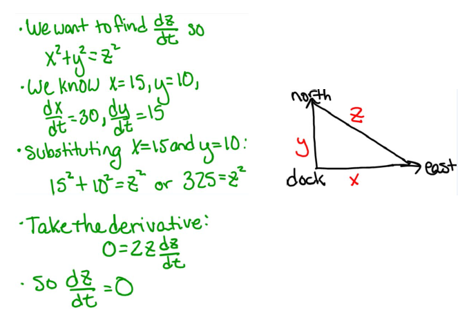

Two boats leave from the same dock, but at slightly different times. One boat is traveling east at 30mph while the other boat is traveling north at 15mph. At an instant in time when the boat traveling east is 15 miles from the dock and the boat traveling north is 10 miles away from the dock, at what rate is the distance between the boats changing?

The error occurs when the student plugs in values for \(x\) and \(y\) before
differentiating the equation \(x^2 + y^2 = z^2\) with respect to time. The distances \(x\) and \(y\) are clearly
changing with respect to time, and so they cannot be treated as constants when we
are differentiating.
Differentiating \(x^2 + y^2 = z^2\) with respect to \(t\) yields:
\[ 2x \dd [x]{t} + 2y \dd [y]{t} = 2z \dd [z]{t}\]
Canceling the 2’s and plugging in the known quantities yields:
\[ z\dd [z]{t} = (15)(30) + (10)(15) = 450 + 150 = 600 \]
In the above work, the student did correctly compute that \(z^2 = 325\) at this fixed instant in time. So \(z = 5\sqrt {13}\), and we can solve for \(\dd [z]{t}\) to obtain
\[ \Bigl [\dd [z]{t}\Bigr ]_{x=15,y=10} = \frac {600}{5 \sqrt {13}} = \frac {120}{\sqrt {13}} \, mph \]